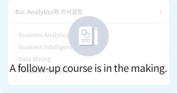
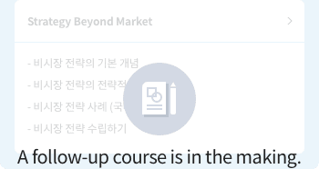
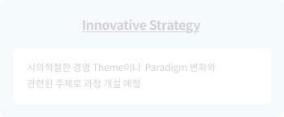

Management College
How Should I Change My Work for Deep Change?
How Can I Improve Myself?
How Can I Improve Myself?
Management College conducts business to achieve Deep Change. It offers professional
lessons in 6 function groups and one competency area to reinforce the learners’ initiative.
Currently, the plan is the allowance of combining different functions (instead of just
knowledge and expertise of each function group) to ensure mixed and integrated skill sets.
lessons in 6 function groups and one competency area to reinforce the learners’ initiative.
Currently, the plan is the allowance of combining different functions (instead of just
knowledge and expertise of each function group) to ensure mixed and integrated skill sets.
Corporate
Management
/Strategy
Management
/Strategy
- It not only offers essential and in-depth contents for each job, but also lessons that reflect Deep Change.
- Through this, the goal is to systematize knowledge and reinforce a strategic way of thinking among the employees.
Click each badge and course to go to the corresponding page.


Methodology/
Applied Learning



Understanding
Concepts
